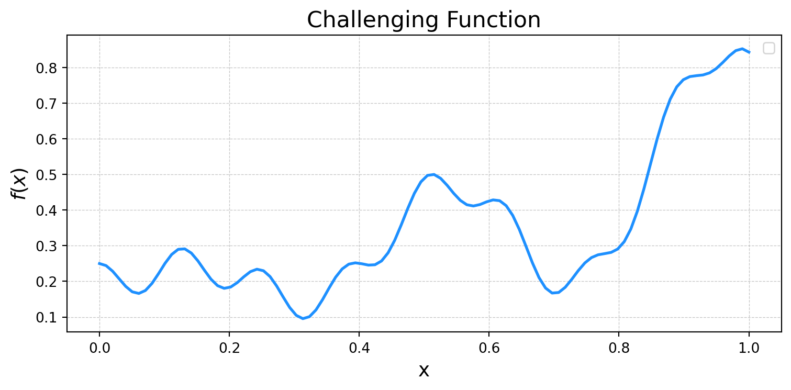
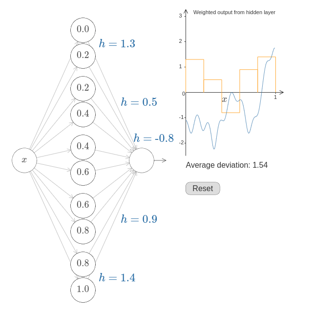

/tmp/ipykernel_790799/3506477847.py:14: UserWarning: No artists with labels found to put in legend. Note that artists whose label start with an underscore are ignored when legend() is called with no argument.
plt.legend()
/tmp/ipykernel_790799/4261977703.py:13: UserWarning: No artists with labels found to put in legend. Note that artists whose label start with an underscore are ignored when legend() is called with no argument.
plt.legend()

Universal Function Idea
Hidden Layer Represents Intervals on x-axis
Pairs of neurons implement step functions
Match Amplitude
Increase Intervals

How would you train one?
Have set of training data \(\mathbf{x}_i\) and target \(y_i\)
Have settled on an architecture:
\(n_i\) neurons in layer \(i\)
\(m\) total layers
\(w_{jk,i}\) is weight of neuron \(j\) in layer \(i-1\) on neuron \(k\) in layer \(i\)
loss.backward() updated the tensors w and b to include the gradient with respect to loss\[
\frac{\partial \mathrm{loss}}{\partial \mathbf{w}},\quad \frac{\partial \mathrm{loss}}{\partial \mathbf{b}},
\]
Neural Network architectures are constructed using the nn.Module class
import torch.nn as nnimport torch.nn.functional as Fimport torch.optim as optim# The network class contains the intializer and some methods for our neural network# You create a network by calling Network([Nodes_Input,Nodes_2,Nodes_3,...,Nodes_Output]) class Network(nn.Module):def__init__(self, sizes):super(Network, self).__init__()self.sizes = sizesself.num_layers =len(sizes)self.layers = nn.ModuleList()for i inrange(self.num_layers -1): layer = nn.Linear(sizes[i], sizes[i+1]) nn.init.xavier_normal_(layer.weight) # Good initialization for shallow/sigmoid nets#nn.init.kaiming_normal_(layer.weight, mode='fan_out', nonlinearity='relu') initialization for relus#nn.init.kaiming_uniform_(layer.weight, mode='fan_out', nonlinearity='relu') initialization for relus and deep nets nn.init.zeros_(layer.bias) # initialize the bias to 0self.layers.append(layer)# Forward is the method that calculates the value of the neural network. Basically we recursively apply the activations in each# layerdef forward(self, x):for layer inself.layers[:-1]: x = F.sigmoid(layer(x)) # sigmoid layers#x = F.relu(layer(x)) # You will try the relu layer in the last problem x =self.layers[-1](x) return x
def train(network, train_data, epochs, eta, test_data=None): optimizer = optim.SGD(network.parameters(),momentum=0.8,nesterov=True, lr=eta,weight_decay=1e-5) loss_fn = nn.CrossEntropyLoss() loss_history = [] accuracy_history = [] train_accuracy_history = []# We are going to loop over the epochsfor epoch inrange(epochs):# This puts the network into training mode network.train() running_loss =0.0 batch_count =0# Now we loop through the batches to trainfor data, target in train_data: optimizer.zero_grad() # This clears the internally stored gradients output = network(data) # evaluate the neural network on the minibatch, we will compare this to the target# Here we calculate the loss function and then use backpropagation# to calculate the gradient loss = loss_fn(output, target) loss.backward()# Update the weights optimizer.step() running_loss += loss.item() batch_count +=1# Track our metrics avg_loss = running_loss / batch_count loss_history.append(avg_loss)# Compute our training set accuracy train_acc = evaluate(network,train_data) train_accuracy_history.append(train_acc)# Compute our test set accuracy acc = evaluate(network, test_data) accuracy_history.append(acc)# Update the status of our run at this epochprint(f"Epoch {epoch+1}: Avg loss: {avg_loss:.4f} | Test Accuracy: {acc:.4f} | Train Accuracy: {train_acc:.4f} ")return loss_history, train_accuracy_history, accuracy_historydef evaluate(network, test_data): network.eval() correct =0 total =0# We have the "with torch.no_grad()" line for efficiency purposeswith torch.no_grad():for data, target in test_data: output = network(data) pred = output.argmax(dim=1, keepdim=True) correct += pred.eq(target.view_as(pred)).sum().item() total += data.size(0) acc = correct / totalreturn acc
def train(network, train_data, epochs, eta, test_data=None): optimizer = optim.SGD(network.parameters(),momentum=0.8,nesterov=True, lr=eta,weight_decay=1e-5) loss_fn = nn.CrossEntropyLoss() loss_history = [] accuracy_history = [] train_accuracy_history = []# We are going to loop over the epochsfor epoch inrange(epochs):# This puts the network into training mode network.train() running_loss =0.0 batch_count =0
Training a Network
Loop over batches of training examples
# Now we loop through the batches to trainfor data, target in train_data: optimizer.zero_grad() # This clears the internally stored gradients output = network(data) # evaluate the neural network on the minibatch, we will compare this to the target# Here we calculate the loss function and then use backpropagation# to calculate the gradient loss = loss_fn(output, target) loss.backward()# Update the weights optimizer.step() running_loss += loss.item() batch_count +=1